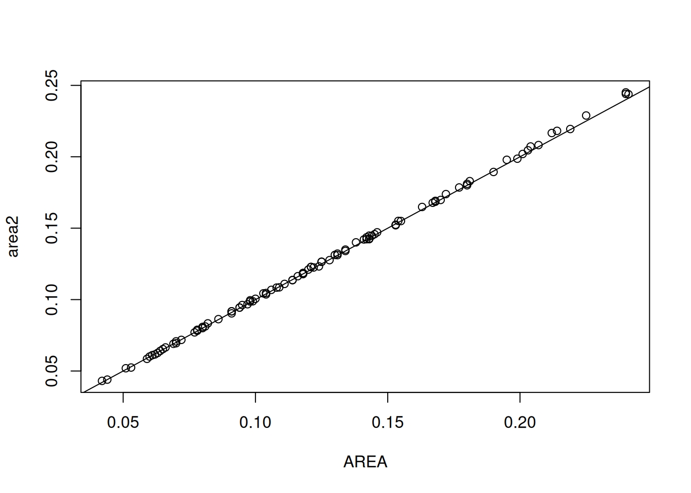
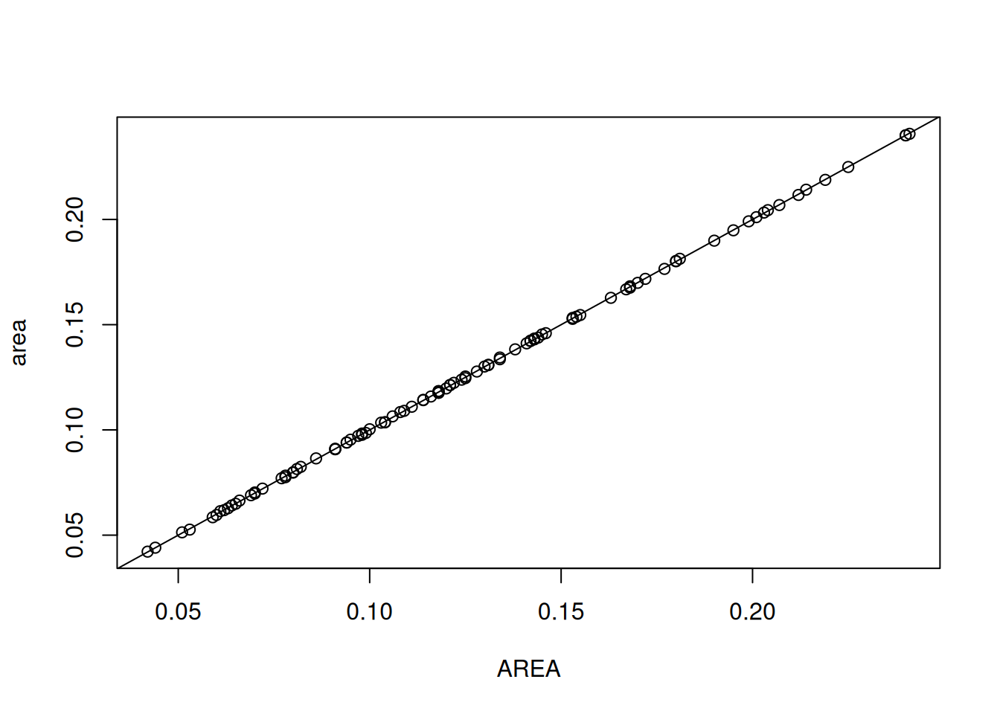
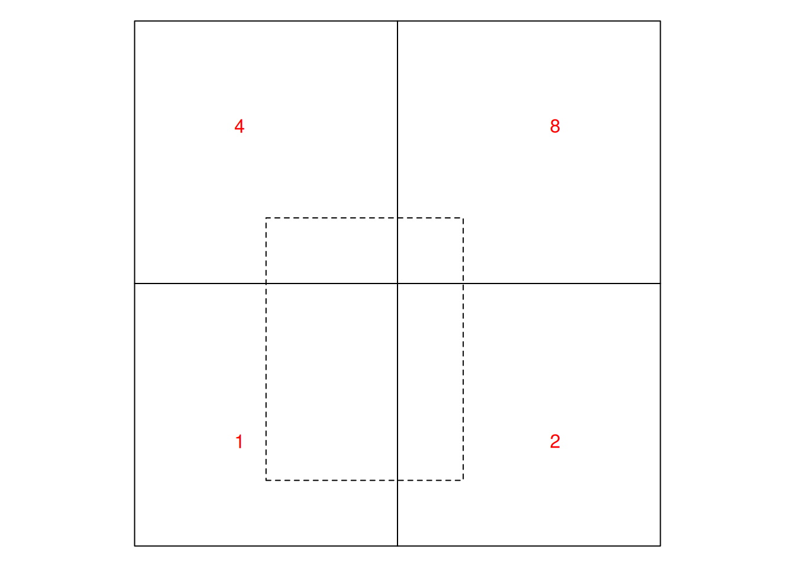

library(sf)
# Linking to GEOS 3.10.2, GDAL 3.4.1, PROJ 8.2.1; sf_use_s2() is TRUE
nc = read_sf(system.file("gpkg/nc.gpkg", package="sf"))
nc$AREA[1:10]
# [1] 0.114 0.061 0.143 0.070 0.153 0.097 0.062 0.091 0.118 0.124
s2 = sf_use_s2(FALSE) # use spherical geometry:
# Spherical geometry (s2) switched off
nc$area = a_sph = st_area(nc)
nc$area[1:10]
# Units: [m^2]
# [1] 1137388604 611077263 1423489919 694546292 1520740530
# [6] 967727952 615942210 903650119 1179347051 1232769242
sf_use_s2(TRUE) # use ellipsoidal geometry:
# Spherical geometry (s2) switched on
nc$area = a_ell = st_area(nc)
nc$area[1:10]
# Units: [m^2]
# [1] 1137107793 610916077 1423145355 694378925 1520366979
# [6] 967504822 615794941 903423919 1179065710 1232475139
sf_use_s2(s2) # set back to original
cor(a_ell, a_sph)
# [1] 0.99999995 Attributes
Exercise 5.1.
type of State
The appropriate value would be constant: there is no identity relationship of State to one of the counties in nc, and the value of State is constant through each county in the state (every point in every county in the state has this value for State).
Exercise 5.2.
type of State for the entire state
Now, the unioned geometry is that of the state, and we can assign identity: there is only one state of North Carolina, an this geometry is its geometry.
Exercise 5.3.
the AREA variable
The nc dataset is rather old, and did not come with an extensive report how, in detail, certain variables such as AREA were derived, so some detective work is needed here. How did people do this, more than three decades ago?
We can now compute area by
and this gives the area, in square metres, computed using either ellipsoidal or spherical geometry. We see that these are not identical, but nearly perfectly linearly correlated.
A first hypothesis might be a constant factor between the area and AREA variables. For this, we could try a power of 10:
nc$area2 = units::drop_units(nc$area / 1e10)
cor(nc$AREA, nc$area2)
# [1] 0.9998116
summary(lm(area2 ~ AREA, nc))
#
# Call:
# lm(formula = area2 ~ AREA, data = nc)
#
# Residuals:
# Min 1Q Median 3Q Max
# -2.281e-03 -6.279e-04 6.328e-05 5.495e-04 2.746e-03
#
# Coefficients:
# Estimate Std. Error t value Pr(>|t|)
# (Intercept) -0.0009781 0.0002692 -3.633 0.000448 ***
# AREA 1.0138124 0.0019882 509.920 < 2e-16 ***
# ---
# Signif. codes: 0 '***' 0.001 '**' 0.01 '*' 0.05 '.' 0.1 ' ' 1
#
# Residual standard error: 0.0009733 on 98 degrees of freedom
# Multiple R-squared: 0.9996, Adjusted R-squared: 0.9996
# F-statistic: 2.6e+05 on 1 and 98 DF, p-value: < 2.2e-16
plot(area2 ~ AREA, nc)
abline(0, 1)
and we see a pretty good, close to 1:1 correspondence! But the factor 1e10 is strange: it does not convert square metres into a usual unit for area, neither for metric nor for imperial units.
Also, there are deviations from the 1:1 regression line. Could these be explained by the rounding of AREA to three digits? If rounding to three digits was the only cause of spread around the regression line, we would expect a residual standard error similar to the standard deviation of a uniform distribution with width .001, which is
sqrt(0.001^2/12)
# [1] 0.0002886751but the one obtained int he regression is three times larger. Also, the units of AREA would be 1e10 \(m^2\), or 1e4 \(km^2\), which is odd and could ring some bells: one degree latitude corresponds roughly to 111 km, so one “square degree” at the equator corresponds roughly to \(1.11^2 \times 10^4\), and at 35 degrees North roughly to
111 ^ 2 * cos(35 / 180 * pi)
# [1] 10092.77which closely corresponds to the regression slope found above.
We can compute “square degree” area by using the \(R^2\) area routines, e.g. obtained when we set the CRS to NA:
nc2 = nc
st_crs(nc2) = NA
nc2$area = st_area(nc2) # "square degrees"
plot(area ~ AREA, nc2)
abline(0,1)
cor(nc2$area, nc2$AREA)
# [1] 0.999983
summary(lm(area ~ AREA, nc2))
#
# Call:
# lm(formula = area ~ AREA, data = nc2)
#
# Residuals:
# Min 1Q Median 3Q Max
# -5.471e-04 -2.265e-04 -9.880e-06 2.714e-04 4.594e-04
#
# Coefficients:
# Estimate Std. Error t value Pr(>|t|)
# (Intercept) 7.436e-05 7.965e-05 0.934 0.353
# AREA 9.996e-01 5.882e-04 1699.395 <2e-16 ***
# ---
# Signif. codes: 0 '***' 0.001 '**' 0.01 '*' 0.05 '.' 0.1 ' ' 1
#
# Residual standard error: 0.0002879 on 98 degrees of freedom
# Multiple R-squared: 1, Adjusted R-squared: 1
# F-statistic: 2.888e+06 on 1 and 98 DF, p-value: < 2.2e-16We now get a much better fit, a near perfect correlation, and a regression standard error that corresponds exactly to what one would expect after rounding AREA to three digits.
A further “red flag” against the constant (1e10) conversion hypothesis is the spatial pattern of the regression residuals obtained by the first approach:
these residuals clearly show a North-South trend, corresponding to the effect that the Earth’s curvature has been ignored during the computation of AREA (ellipsoidal coordinates were treated as if they were Cartesian). “Square degrees” become smaller when going north.
The “unit” of the AREA variable is hence “square degree”. This is a meaningless unit for area on the sphere, because a unit square degree does not have a constant area.
Exercise 5.4
type of area
“area” is of type aggregate: it is a property of a polygon as a whole, not of each individual point in the polygon. It is extensive: if we cut a polygon in two parts, the total area is distributed over the parts.
Exercise 5.5
area-weighted interpolation
From the on-line version of the book we get the code that created the plot:
g = st_make_grid(st_bbox(st_as_sfc("LINESTRING(0 0,1 1)")), n = c(2,2))
par(mar = rep(0,4))
plot(g)
plot(g[1] * diag(c(3/4, 1)) + c(0.25, 0.125), add = TRUE, lty = 2)
text(c(.2, .8, .2, .8), c(.2, .2, .8, .8), c(1,2,4,8), col = 'red')
A question is how we can make g into an sf object with the right attribute values associated with the right geometries. We try values 1:4:
sf = st_sf(x = 1:4, geom = g)
plot(sf)and see the order of the geometries: row-wise, bottom row first, so
gives us the source object. We create target geometries by
dashed = g[1] * diag(c(3/4, 1)) + c(0.25, 0.125)
box = st_union(g)
c(dashed, box)
# Geometry set for 2 features
# Geometry type: POLYGON
# Dimension: XY
# Bounding box: xmin: 0 ymin: 0 xmax: 1 ymax: 1
# CRS: NA
# POLYGON ((0.25 0.125, 0.625 0.125, 0.625 0.625,...
# POLYGON ((0 0.5, 0 1, 0.5 1, 1 1, 1 0.5, 1 0, 0...and can call st_interpolate_aw to compute the area-weighted interpolations:
st_interpolate_aw(sf, c(dashed, box), extensive = TRUE)
# Warning in st_interpolate_aw.sf(sf, c(dashed, box), extensive =
# TRUE): st_interpolate_aw assumes attributes are constant or uniform
# over areas of x
# Simple feature collection with 2 features and 1 field
# Attribute-geometry relationship: aggregate (1)
# Geometry type: POLYGON
# Dimension: XY
# Bounding box: xmin: 0 ymin: 0 xmax: 1 ymax: 1
# CRS: NA
# x geometry
# 1 1.75 POLYGON ((0.25 0.125, 0.625...
# 2 15.00 POLYGON ((0 0.5, 0 1, 0.5 1...
st_interpolate_aw(sf, c(dashed, box), extensive = FALSE)
# Warning in st_interpolate_aw.sf(sf, c(dashed, box), extensive =
# FALSE): st_interpolate_aw assumes attributes are constant or
# uniform over areas of x
# Simple feature collection with 2 features and 1 field
# Attribute-geometry relationship: aggregate (1)
# Geometry type: POLYGON
# Dimension: XY
# Bounding box: xmin: 0 ymin: 0 xmax: 1 ymax: 1
# CRS: NA
# x geometry
# 1 2.333333 POLYGON ((0.25 0.125, 0.625...
# 2 3.750000 POLYGON ((0 0.5, 0 1, 0.5 1...This generates a warning, which we can get rid of by setting the agr to constant:
st_agr(sf) = "constant"
st_interpolate_aw(sf, c(dashed, box), FALSE)
# Simple feature collection with 2 features and 1 field
# Attribute-geometry relationship: aggregate (1)
# Geometry type: POLYGON
# Dimension: XY
# Bounding box: xmin: 0 ymin: 0 xmax: 1 ymax: 1
# CRS: NA
# x geometry
# 1 2.333333 POLYGON ((0.25 0.125, 0.625...
# 2 3.750000 POLYGON ((0 0.5, 0 1, 0.5 1...